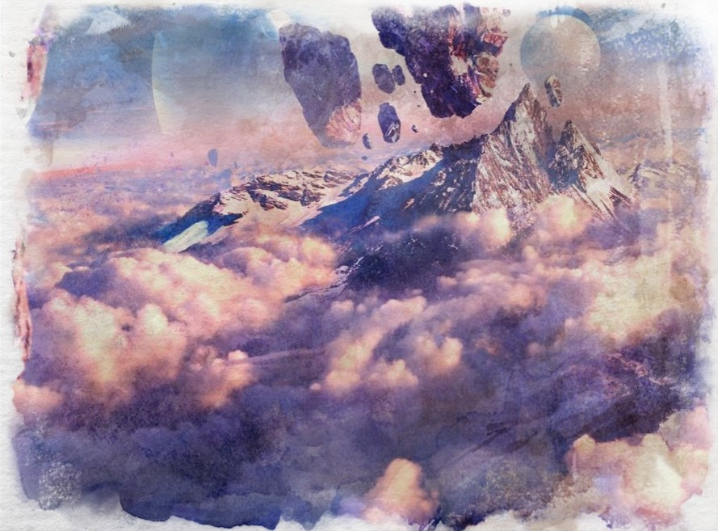

Wyrd
Reign of Gods, for the most part, takes place in the world of Wyrd. This world is an amalgamation of several elemental spheres, namely: the crystal, wood, water, air and stone elemental spheres. As such it has massive stockpiles of qi giving rise to a diverse world including survivors from many of these remnant worlds.